岗位匹配
Senior / Staff Agent Researcher / Engineer：评测驱动、系统级 Agent、多智能体、复杂场景下的工程落地
| 能力维度 | 实践摘要 |
|---|---|
| 以评测驱动迭代 | NLU / QNN 对齐评测、VLM 与 DMS 论文管线、内部 Agent 与 Aily / Hackathon 筛选流程 |
| 可观测、可维护、可优化 | 企业级 vLLM 工具链、GPU 运维与采购、周会/纪要沉淀、Docker / 全栈交付 |
| 自动化评测基础设施 | VLMEvalKit 接入文档、座舱数据闭环、多方向探索项目的节奏化复盘 |
| 模型 / 推理 / 工具 / 成本 | Qwen3-VL QNN W8A16、Joint-BERT 工具槽位、DeepSeek / Qwen3 大模型服务选型 |
| 汽车 / 芯片 / 座舱 | 舱内 DMS ITSC 论文、行车 BEV 预标、端侧 QNN 8797/8295 适配 |
| 学术与校企课题 | 硕士毕设（Diffusion / ControlNet 异常数据增强）、校企生成式世界模型（双核架构、验收指标与分工） |
补充自我评价：我是一个具备创新意识的工程师，在深耕核心能力的同时持续拓展横向视野；在人才 365 项目中产出明显提效价值并获得晋升后，继续承担招聘与带教 KPI，持续锻炼跨团队沟通、任务分配与资源协调能力。
履历总览
Desay SV（2024–至今）：详情页顺序为 纵向（座舱主线）→ 横向（效率与平台侧）→ 历史项目（Innovus、毕设、校企课题与早期 BEV）。
横向 · 广度（效率 Agent、文档智能、人才与创业）
纵向 · 深度（当前座舱 / 模型主线）
历史项目（与当前座舱岗位弱相关）
纵向：座舱多模态 VLM
旅行记忆 · 代驾场景 · 端侧约束技术要点
- 数据挖掘：本地 Qwen2.5-VL:32B 融合 高德 Amap API 与 YOLOv8，对驾驶视频做场景理解，筛出长尾路况、异形物体与可讲性高的片段，降低人工翻片成本。
- 自动标注：调用 OpenAI / Gemini 为旅行/行程片段生成 caption 与标签，形成弱监督语料，与车机业务字段对齐后再人工抽检。
- 监督微调：在清洗后的多模态语料上做 全参 SFT，主干为 Qwen2.5-VL:3B，兼顾座舱响应时延与效果；代驾向需求单独积累 衣着 / 异常行为 / 遗失物 等细粒度检测样本并迭代。
- 端侧部署：Qwen3-VL:2B 走 W8A16 QNN 量化，针对 8797 / 8295 做 算子适配与内存占用裁剪，与产品共同约束 帧率、首 token 时延 与功耗。
- 多源输入：架构上对齐 语音 VUI、DMS、导航 与视觉理解，输出结构化 标题 / 总结 / 标签，便于座舱服务编排与后续检索。
系统价值
- 在座舱内跑通 采集 → 自动标注 → SFT → QNN 部署 的闭环，同一套方法论可复用到旅行记忆与代驾安全等多条产品线。
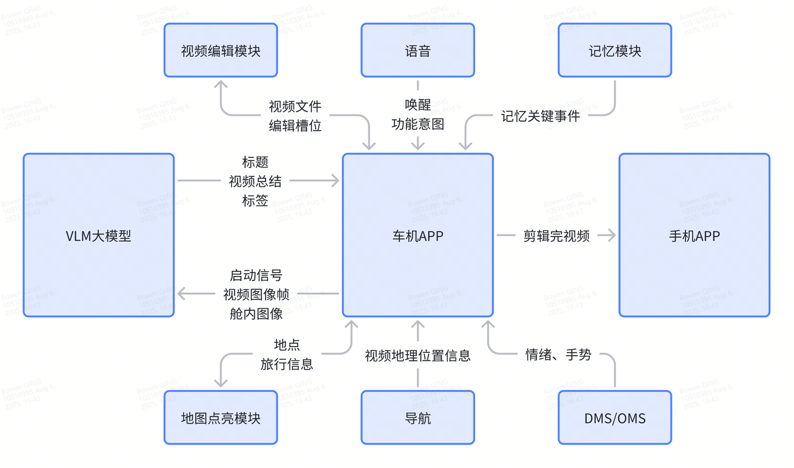
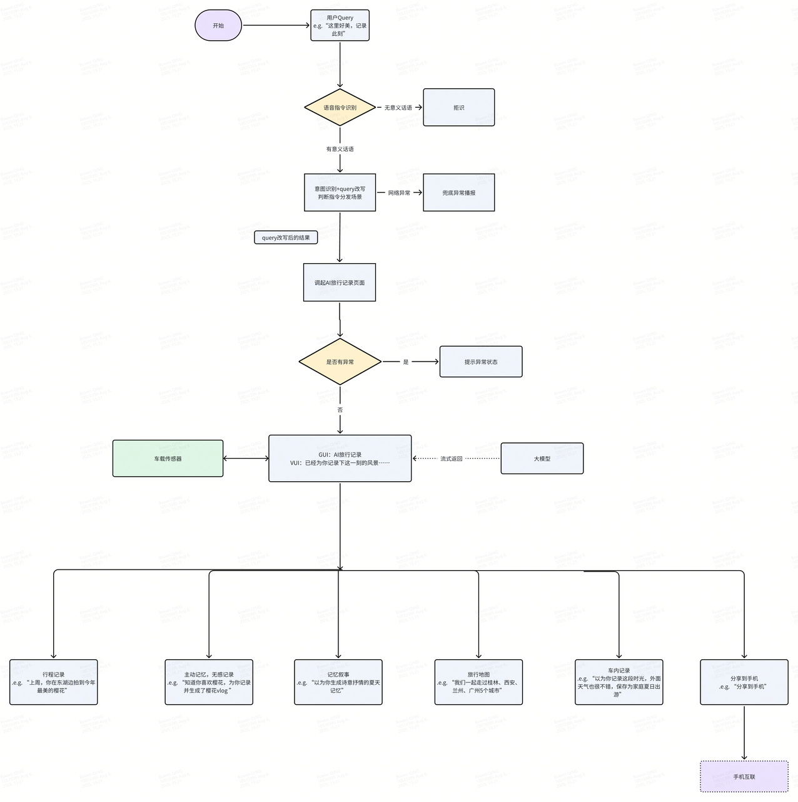
纵向：NLU 与端侧 QNN
意图 · 槽位 = 工具调用结构技术要点
- Joint-BERT 车端模型：同时完成 乘客意图分类（多类意图）与 工具调用槽位（predicate / object 等）抽取，为语音助手提供可执行的结构化意图。
- 训练与对齐：PyTorch 训练脚本、离线精度评估，再导出 ONNX 走编译与 QNN 上板；纪要中沉淀 W8A16 与敏感算子取舍、量化前后对齐评测（意图 / 槽位 F1）。
- 数据闭环：自动标注产线持续喂数；用 NLU 样本分布统计 看各类意图与槽位键的长尾，驱动过采样、难例挖掘与词典 / 规则补丁。
- 工程注意点：batch 布局、最大序列长度、特殊 token 与车机唤醒词并存时的冲突消解；上线前固定随机种子与回归测试集防回归。
系统价值
- 提供可部署、可测、可量化对齐的 NLU 底座，把上层 Agent / tool use 从「能 demo」推到「车载稳定接口」。
纵向：AI 代驾与评测接入
VLMEvalKit · 原型与文档技术要点
- 系统拆分：原型文档将代驾拆为 云端推理服务、API 网关、虚拟传感器 / 数字孪生 与 车主 / 代驾员 / 车机 三端 App，明确鉴权、会话与消息通道。
- 多模态输入：路侧与车内视频流、语音指令与车况信号进入统一特征与时序对齐模块，便于后续接入座舱 VLM 能力复用。
- VLMEvalKit：按开发文档完成 数据集注册、推理脚本适配 与 指标对齐（含批大小、tokenizer、图像分辨率 约定），输出可给测试同学直接跑的评测命令与配置。
- 交付物：README 中的环境变量、依赖版本、样例请求与已知限制，降低跨团队接手成本。
系统价值
- 把「接评测」从一次性脚本变成可维护的评测入口，与座舱 VLM 数据闭环、论文实验共用同一套基准思维。
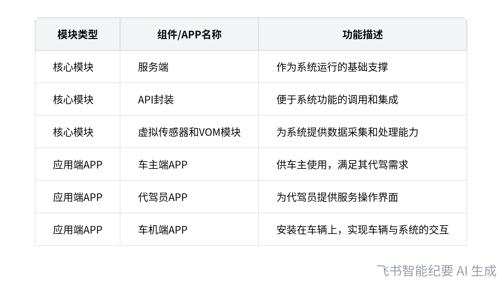
纵向：DMS 安全监控（ITSC 2026）
混合 YOLOv11 × Qwen3-VL · 实时性技术要点
- 混合架构：L1 侧用 YOLOv11 级检测器做人脸框、关键点与简单规则，高帧率、低算力；L2 侧用 Qwen3-VL 做语义推理（疲劳、分心、危险动作等），低频触发。
- 时空融合：两路结果经 时间缓冲（如 3s 窗口） 与置信度加权融合，策略上偏保守（宁可多提醒），并记录可解释标签供安全审计。
- 指标：在 YawDD 等公开材料口径下，整体准确率约 92.16%，端到端延迟约 33ms 量级，满足实时 DMS 场景。
- 论文向工作：问题形式化、对比纯视觉与视觉-语言分支、消融与失败案例分析，对接 ITSC 2026 投稿流程。
系统价值
- 把安全关键场景拆成可证明的层级管线：底层可靠检测 + 上层语义补充，便于车规评审与后续OTA 迭代。
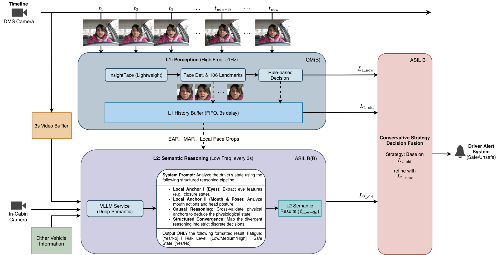
横向：内部 Agent 与平台
导师 / 技术负责人 · 10+ 实习生并行课题角色：RD3 方向 导师 + 技术负责人，统一节奏（周会 / AI notes）、拆解课题、把控评测与交付；底座为 Qwen3:30B-A3B、DeepSeek-R1:671B（vLLM）及公司 GPU 资源协调。
实习生课题铺平
SAP 术语与字段逻辑、税码与供应商号校验；待财务接口与 AB 类流程调试。
群 / 云文档 / 邮件多源；召回与准确率指标；私聊、群聊与纪要测试集建设；规划 Agent 规划与 RL。
视频流长期记忆与磁盘；人脸与声纹匹配；座舱 / 旅行记忆 / 家居场景。
约 200GB 视频处理；GPT API 自动标注与文案。
Behavior-1K 训练部署与文献调研。
Blackwell VLM 推理；Docker 镜像与源码改造。
协作工具重构；SQLite 集成。
需求分析与技术方案。
新增重点项目
带实习生调研并评测开源方案，围绕术语一致性、跨语种质量、企业知识库接入与交付流程制定技术路线。
完成从技术调研到可部署方案评估，重点覆盖截图感知→VLM 决策→ADB 执行循环、vLLM 本地部署要求与多端可行性。
把调研文档升级为可落地 PoC 清单 + 评测维度，提升后续项目选型和孵化效率。
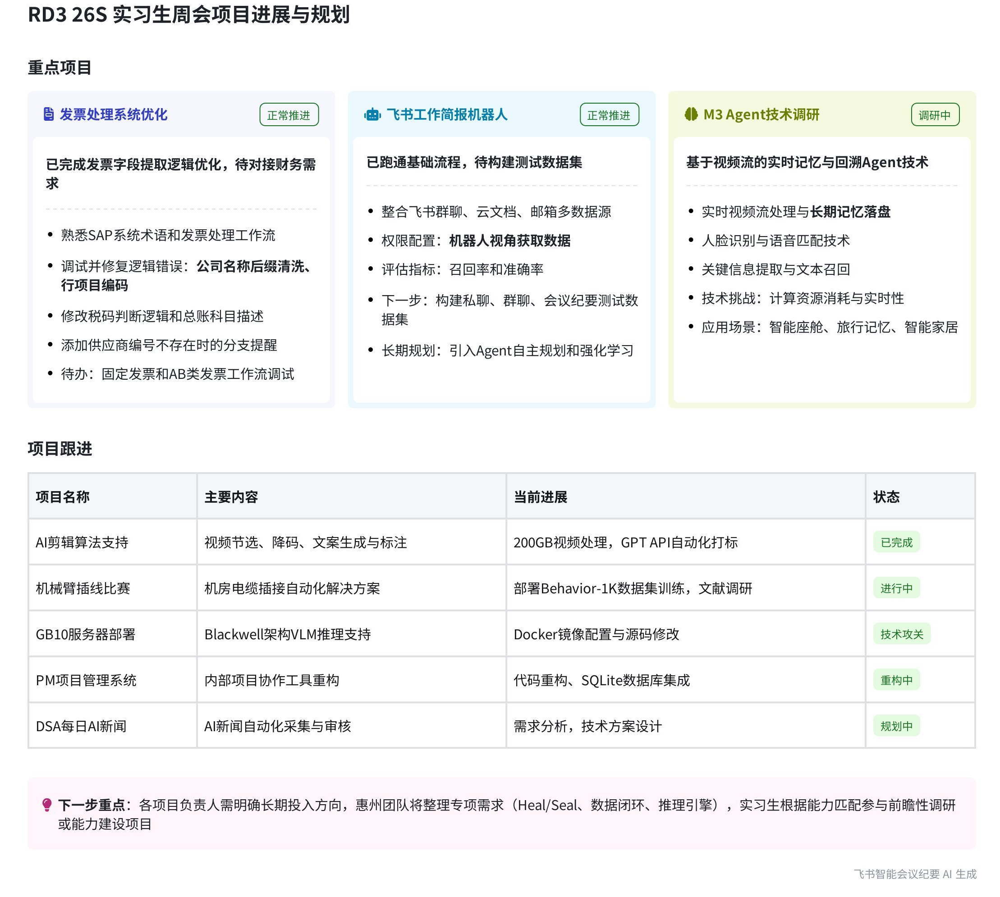
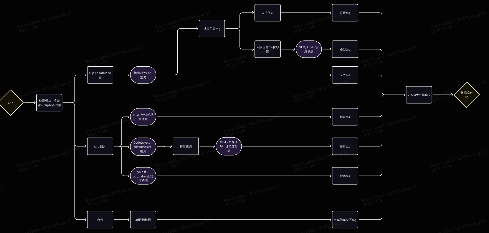
横向：PRD / UI & 文档智能
设计协同 · 文档比对技术要点
- Figma 优先路径：CSS 导出、MCP、云端协作，对比 Sketch 与 PDF OCR 路线
- 横向差异（多市场功能对比）与纵向迭代（版本演进）双维度文档比对需求
- 自动审计：PRD/UE 对齐、版本更新识别与 UEUI 一致性，拆解为结构化 JSON 比对任务
系统价值
- 设计资产 × LLM 的可复用工作流与可落地输出（差异表、看板）
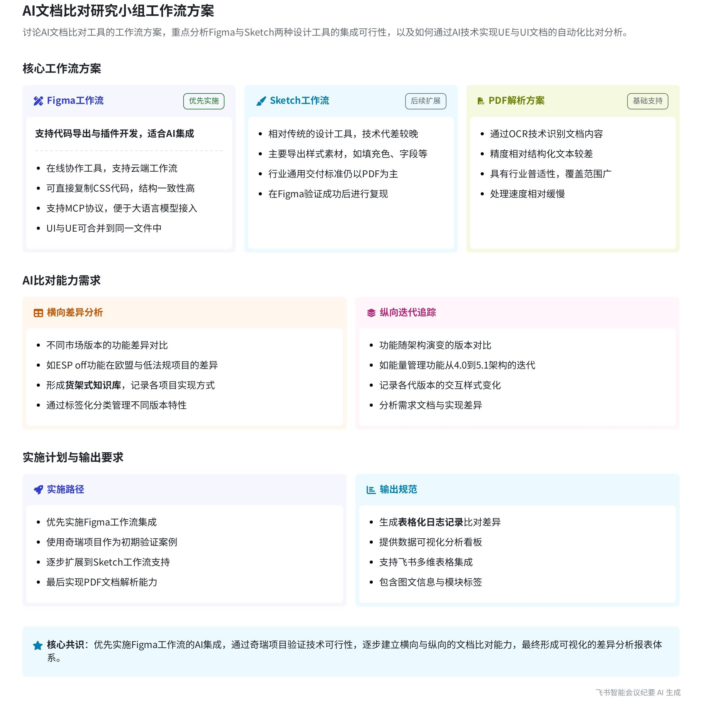
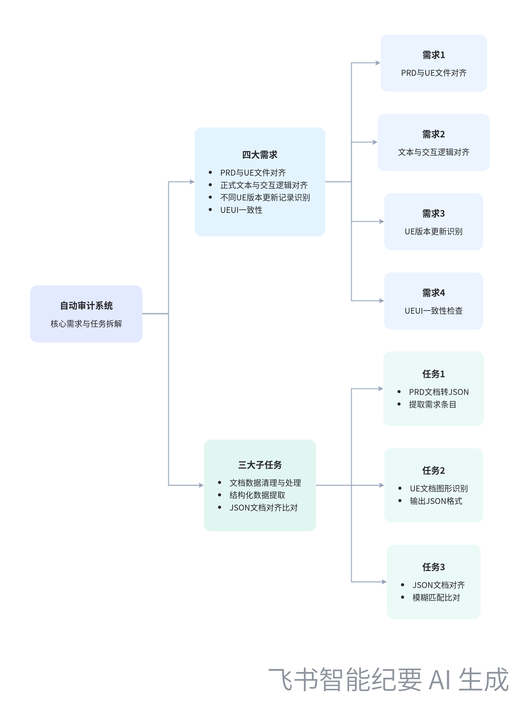
横向：Hackathon 与人才评测
简历筛选 · 人才 365（DeepSeek × 飞书 aPaaS）Hackathon：多份简历的结构化初评入口；人才 365：面向「N 岗位 × 海量简历」的粗召回 + 细粒度 LLM 评分 + 飞书卡片 / 邮件双通道推送，材料已更新为 PDF 版。
人才 365（晋升材料正文摘要）
- 痛点：HR 被动等投递；沉淀池「数百万级」人才与多活跃岗位需 N×N 匹配，飞书人才 360 侧重 1 岗 1 简历，难以覆盖海量交叉筛选。
- 方案：职位发布 → 智能评估 → 精准推送；六大模块（岗位管理、海量大池召回、备选小池、LLM 多维评估、意向邮件、飞书卡片）粗细两层、岗位与人才信息无损流动。
- Step1：LLM 从 JD 生成检索关键词与评估维度权重（示例：工作年限 30%、专业 25%、证书 20%、项目 25%），定时粗网 API 捞池并剔除已推送重复。
- Step2：对粗筛候选人做简历关键信息抽取 + 多维度自然语言打分（如超预期 100 / 符合 80 / 可改进 60 / 不符合 40），加权汇总总分。
- Step3：阈值与后处理规则（可含硬性条件）；通过后 飞书卡片推送 HR、意向邮件触达候选人，回复自动转发 HR 邮箱。
Hackathon
- 《AI Hackathon 大赛》051 简历筛选材料：统一入口与初评说明。
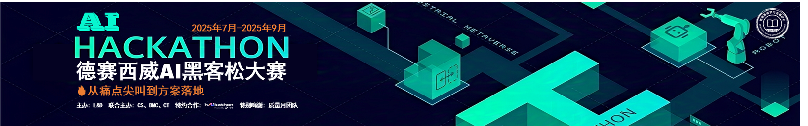
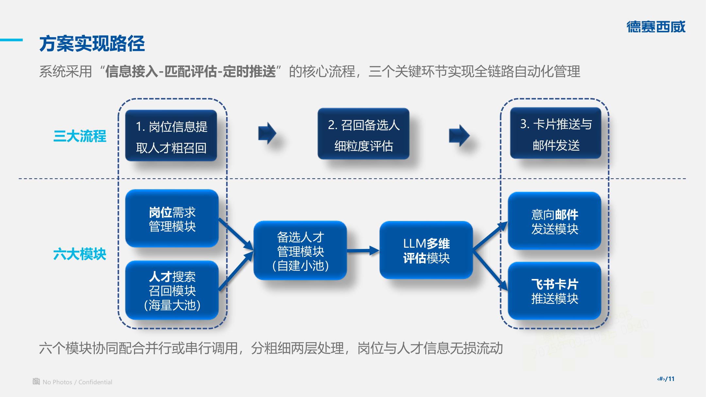
横向：新加坡创新项目孵化
OpenClaw · 机器狗 · 具身智能聚焦“Agent 走向物理世界”的创新孵化方向：围绕 OpenClaw 与机器狗平台结合，探索从语言任务到实体动作执行的完整链路，覆盖任务规划、感知反馈、安全策略与可运营化落地。
项目方向与推进要点
- 技术路径：从纯软件 Agent 扩展到物理执行体，形成“任务理解 → 动作规划 → 执行反馈 → 记忆迭代”的闭环。
- 平台结合：以 OpenClaw 能力与机器狗运动能力做组合验证，面向巡检、辅助作业、交互服务等场景定义 MVP。
- 工程关注点：强化低延迟控制、动作安全边界、异常状态回退机制，以及可重复评测数据集构建。
- 孵化目标：沉淀从调研到 PoC 的标准化流程，缩短创新项目从“想法”到“可演示成果”的周期。
创业公司：Innovus Capital（领创资本）
新加坡 2023.8 成立 · AI 证券研究 · 联合创业 / CTO 侧技术交付商业提案（v3.13）定位：AI 驱动研报服务超 10 亿 散户级市场，强调 30 秒 级生成、单份低至 S$0.99、成本约 S$0.025/份 与规模化报告量目标。
商业提案正文摘要
- 市场：全球证券研报市场规模已标至 400 亿美元 量级；提案给出未来三年收入 CAGR 约 120%、第三年证券研报市场份额目标 5% 等预测口径（见 PDF 投资摘要页）。
- 产品差异：30 秒内输出完整研报；单份 S$0.99 定价带；含公司/行业/财务/预期与估值；强调实时更新与可扩展自动化流水线。
- 增长目标（材料列举）：12 个月内约 30 万 用户、第二年累计约 500 万 份报告、收购后第五年营收 S$5M+ 等里程碑式表述。
- 交易与合规叙事：100% 股权收购可协商、创始团队技术维护与运营支持承诺、EP→PR 路径说明等（以 PDF 为准）。
工程与数据侧（与你的角色衔接）
- 本地 Qwen3:7B 金融分析降低外部 API 依赖；Finhub / YFinance 等美股数据接入；舆情、量化与结构化研报流水线设计。
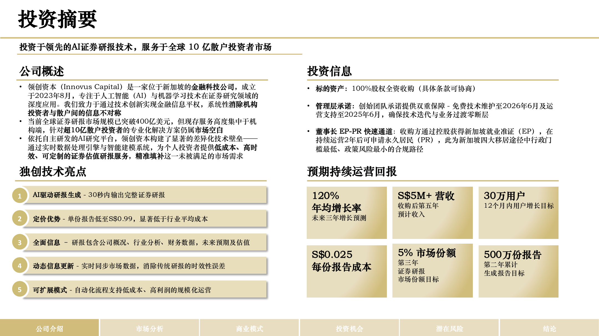
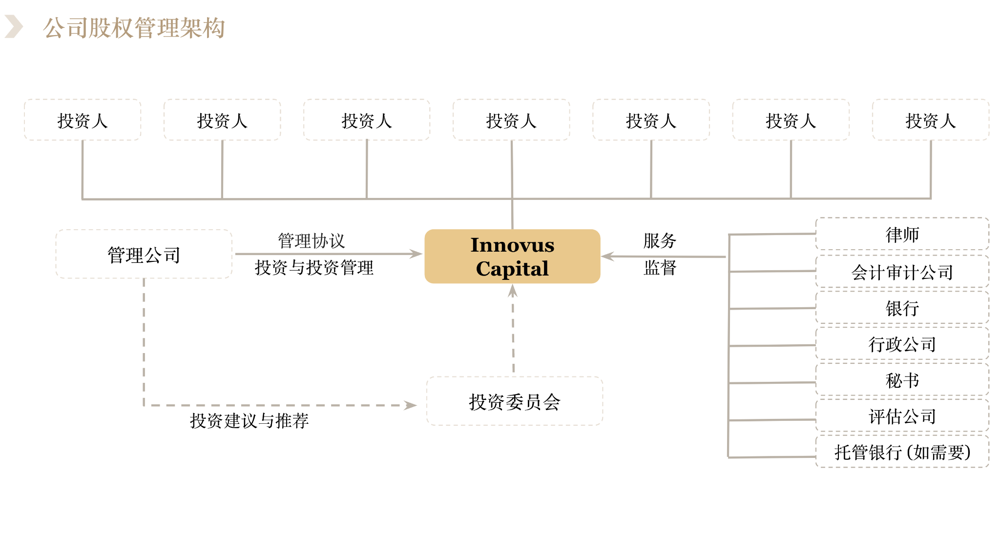
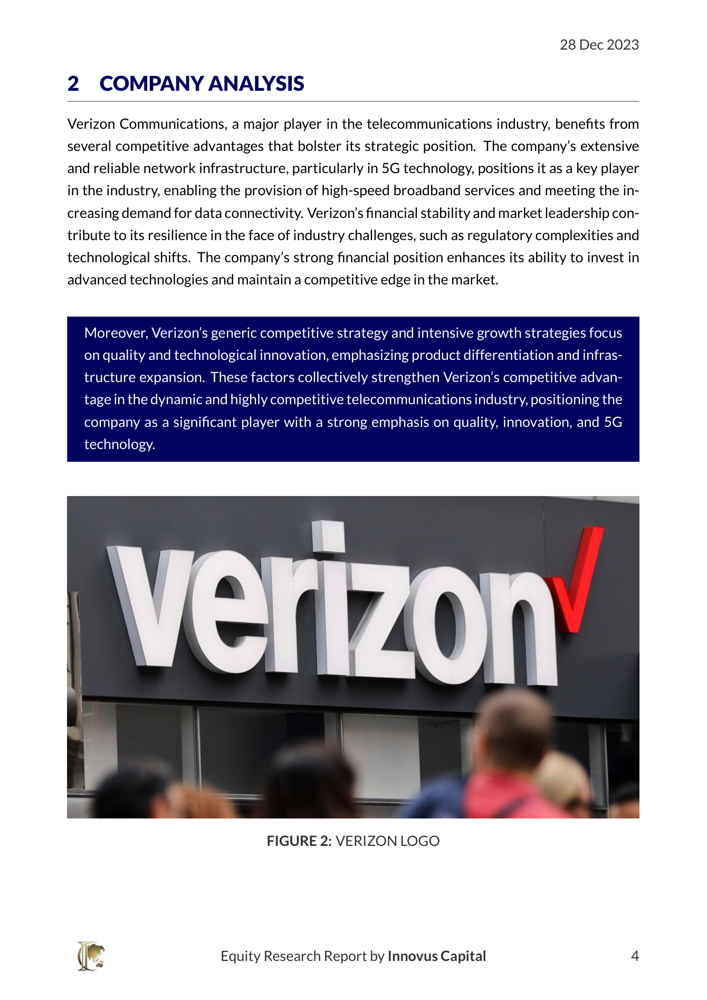
硕士毕设：MSc in Artificial Intelligence（NTU）
AIGC · 自动驾驶异常数据增强 · Final Sharing面向自动驾驶感知与仿真：利用生成式模型对稀有、危险或难采集场景做数据增强，缓解长尾与标注成本问题；与 CARLA 仿真及感知管线结合。
方法与实验
- 生成主干：以 Stable Diffusion 为核心，配合 LoRA 做领域适配；用 ControlNet（Canny / 深度等） 把道路几何与障碍物轮廓编码为条件，缓解纯 Text2Img 的不可控与伪影。
- 区域约束：Segment Anything（SAM） 或同类分割给出可编辑掩码，只在关心区域内做增强，减少对背景建筑的无关改动，便于下游感知一致性检查。
- 仿真数据：在 CARLA 中采集多天气 / 多光照的 BEV / 前视 序列，对稀有类别（如 Cyclist）做实例级增广，并与标注格式对齐以便回灌训练。
- 路线对比：对比 Img2Img 引导与仅 Text2Img 在可控性、细节质量、训练稳定性上的差异；分享稿中给出同 prompt 可视化与失败样例分析。
- 评价思路：除主观观感外，关注 FID / LPIPS 等图像指标与下游检测器AP 变化（若管线允许），避免「生成好看但感知变坏」。

合作课题：校企 · 生成式世界模型
德赛 × NTU / 中大 · DriveArena 类双核目标：高保真交通场景仿真与生成数据，提升感知并支撑闭环测试；周期约 6 个月，分月检查点。验收侧：德赛数据集 3D 检测 / 车道线「仅生成数据」平均提升 约 4%；NuScenes Occ 任务平均提升 约 10% 以体现跨数据集泛化。
架构与分工
- 双核思路：交通管理器（Traffic Manager） 负责 OSM / 路网、动静态参与者与交互逻辑，为生成提供结构化条件；扩散渲染器 负责 多视角 RGB 与 BEV 的高保真输出，贴近 DriveArena 类方案。
- 与端到端自驾衔接：世界模型作为闭环验证的一环，接收控车信号预测未来帧，用于碰撞率、场景覆盖率等指标，而非单点「好看视频」demo。
- TRD 评审要点：材料中归纳 市场机会（高保真仿真需求）、现有工具链不足（如 CARLA 真实感 / 多样性）、以及 NeRF-only / Diffusion-only 路线的局限，引出混合技术路线。
- NTU 侧重：交通管理器优化、长尾场景 与 LLM 场景编辑（自然语言改场景参数）。
- 中大侧重：渲染质量与感知增益，材料中给出德赛数据集 3D 检测 / 车道 仅用生成数据平均约 +4%、NuScenes Occ 约 +10% 等验收型表述，并覆盖 ≥10 类未充分覆盖场景与标注 / 闭环集成。
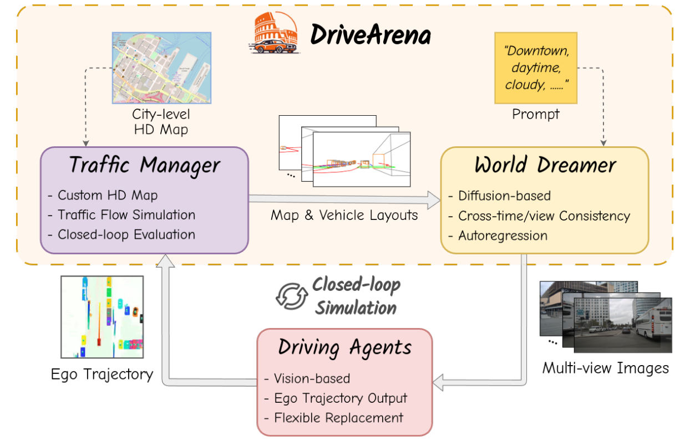
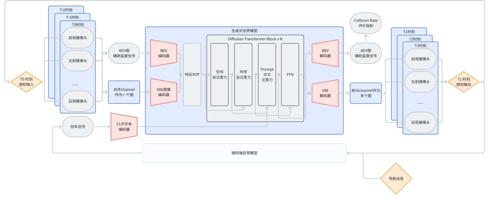
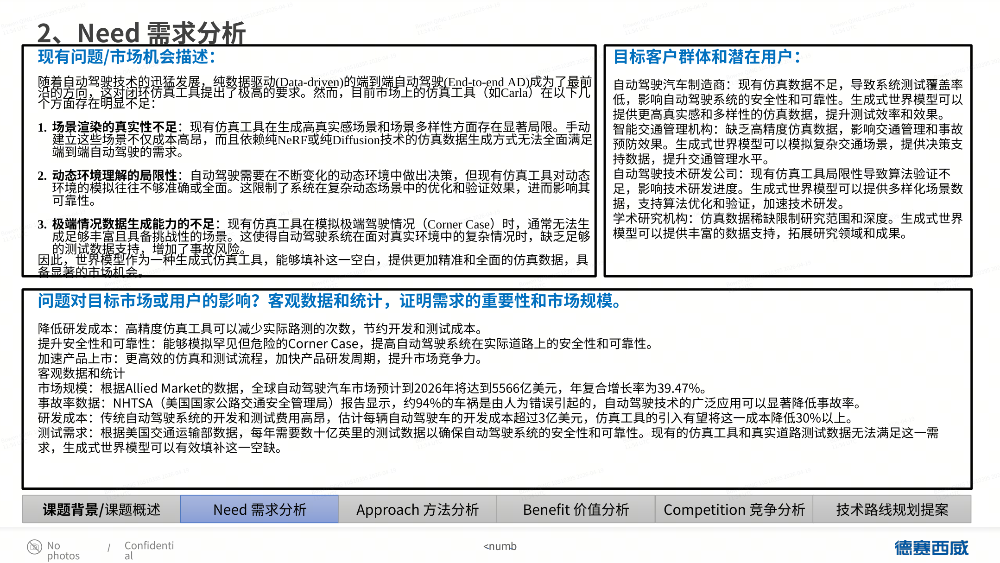
历史项目：BEV 预标与感知（Legacy）
2024.04 – 2025.03行车底图预标与 BEV 感知：GeMap / VMA 路线，自定义 Point2Line 等损失；流式 2D 裁剪支撑 16k×8k 级地图；DeepSpeed 多卡流水线与 RGB+LiDAR 融合实验。
技术要点
- BEV 预标：在 GeMap / VMA 路线下做车道与底图要素检测；自定义 Point2Line 等损失拉近预测折线与真值拓扑，兼顾Chamfer 类指标与业务可解释性。
- 流式增广：对超大分辨率底图（16k×8k 量级）采用 2D 裁剪流式读取，在同等 batch 下显存约 −40%，支撑更长训练迭代。
- 分布式训练：DeepSpeed 多卡流水线、梯度累积与混合精度；分别跟踪 车道线 / 道路边界 / 停止线 等子任务的验证 mAP 曲线，定位过拟合 / 域偏移。
- 多传感器：RGB + LiDAR 强度 融合实验，表格化输出 Recall / Precision / F1@阈值，对比仅视觉与融合在雨雾等场景的增益。
- 交付习惯：实验记录 PDF + Weekly Update 固定超参、数据版本、指标表，便于半年后回溯。
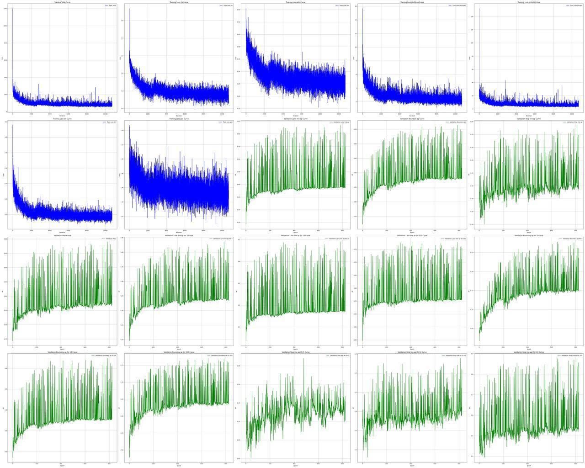
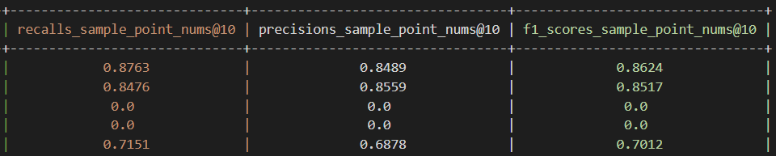
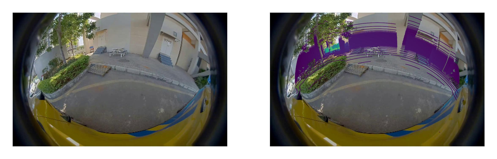
总结
评测与数据
NLU 分布与量化对齐、VLM 数据闭环、内部 Agent 与 Hackathon；人才 365 的 N×N 匹配与商业材料中的可量化目标（Innovus、校企验收等）。
系统工程
端侧 QNN、vLLM 服务、GPU 运维与跨团队交付，在成本、时延与可维护性之间取舍。
座舱与感知
DMS 多层级架构、BEV 预标与多传感器融合，覆盖舱内与行车两条视觉主线。
延伸方向
多轮工具型 Agent 强化学习、评测平台化、开源 Code Agent（Lumen）的持续迭代。
谢谢 · 欢迎交流